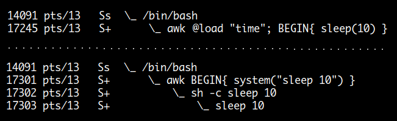

Dynamic Extensions
실행파일을 만들 때는 공통으로 사용되는 library 를 실행파일에 포함시킬 수도 있고 ( static linking ) 그렇지 않고 프로그램 실행 시에 shared library 를 load 하고 link 해 사용할 수도 있습니다 ( dynamic linking ). 이 외에도 프로그램 실행 중에 임의로 특정 library 를 load 해 사용할 수도 있는데 ( dynamic loading ) 이 방법을 이용하면 메인 실행파일과 분리하여 일종의 plug-in 기능을 제공할 수 있습니다.
예를 들면 apache 웹서버에서 볼 수 있는 다양한 모듈들은 이 방법을 이용하는 것인데요. awk 에서도 같은 종류의 확장 기능을 제공합니다. 사용자가 c/c++ 프로그램을 작성하여 일종의 자신의 built-in 함수를 만들어 사용할 수 있습니다. 다음은 time 확장 모듈을 이용해 sleep 명령을 사용한 것과 외부 명령을 사용한 것을 비교한 것인데요. 확장 모듈을 이용할 경우 built-in 함수와 같이 별도의 프로세스가 생성되지 않는 것을 볼 수 있습니다.

awk 에서 기본적으로 제공하는 확장 모듈들. 보통 모듈당 두세개 정도의 함수를 제공합니다.
$ ls -l /usr/lib/x86_64-linux-gnu/gawk/
total 176
-rw-r--r-- 1 root root 26664 2017-01-26 01:06 filefuncs.so
-rw-r--r-- 1 root root 10184 2017-01-26 01:06 fnmatch.so
-rw-r--r-- 1 root root 10176 2017-01-26 01:06 fork.so
-rw-r--r-- 1 root root 14280 2017-01-26 01:06 inplace.so
-rw-r--r-- 1 root root 10152 2017-01-26 01:06 ordchr.so
-rw-r--r-- 1 root root 10136 2017-01-26 01:06 readdir.so
-rw-r--r-- 1 root root 10168 2017-01-26 01:06 readfile.so
-rw-r--r-- 1 root root 10136 2017-01-26 01:06 revoutput.so
-rw-r--r-- 1 root root 10136 2017-01-26 01:06 revtwoway.so
-rw-r--r-- 1 root root 10152 2017-01-26 01:06 rwarray.so
-rw-r--r-- 1 root root 22656 2017-01-26 01:06 testext.so
-rw-r--r-- 1 root root 10152 2017-01-26 01:06 time.so
확장 모듈을 사용하는 방법
# 블록 밖에서 '@load' 키워드를 이용하는 방법
$ awk '
@load "time"
@load "readfile"
BEGIN { ... }
'
# '-l' 옵션을 이용하는 방법
$ awk -l time -l readfile 'BEGIN { ... }'
확장 모듈과 관련된 환경 변수
모듈을 로드할 때
AWKLIBPATH에서 찾습니다.
time
https://www.gnu.org/software/gawk/manual/html_node/Extension-Sample-Time.html
result = sleep(seconds)
seconds 값으로 소수를 사용할 수 있습니다.the_time = gettimeofday()
system() built-in 함수의 경우 반환되는 값이 초 단위이지만 gettimeofday() 는
초 단위 이하 소수점도 표시해 줍니다.
반환되는 값이 숫자라 print 문으로 출력할 때 OFMT 값의 적용을 받습니다.
가령 스크립트 실행 시간을 좀 더 정밀하게 측정할 때 사용할 수 있습니다.
$ awk '@load "time"; BEGIN { OFMT="%.100g"; print systime(); print gettimeofday() }'
1499185591
1499185591.4129660129547119140625
...................................................................................
$ awk -b '@load "time"; BEGIN{ OFMT="%.5f"; RS=".{1,300}"
s = gettimeofday()
while ( getline < "file1.mp3" > 0 ) {
printf "%s", RT > "/inet/tcp/0/some.host.com/8080"
}
e = gettimeofday()
print "time: " e - s
}'
time: 2.50368
inplace
https://www.gnu.org/software/gawk/manual/html_node/Extension-Sample-Inplace.html
awk 에는 기본적으로 sed 에서처럼 수정사항이 바로 파일로 저장되는 -i 옵션이 없는데요.
하지만 이 확장 기능을 이용해서 동일한 기능을 사용할 수 있습니다.
실제 사용방법이 약간 복잡하여 간단히 include 하여 사용할 수 있게 파일로 만들어 놓았습니다.
stdout 출력이 파일로 저장되는 것이므로 만약에 출력이 발생하지 않으면
해당 파일이 삭제되는 결과를 갖게 됩니다.
# include 스크립트 파일
$ cat /usr/share/awk/inplace.awk
# '-i' 옵션을 이용
$ gawk -i inplace '{ gsub(/foo/, "bar"); print }' file1 file2 file3
# backup 파일을 만들 경우 INPLACE_SUFFIX 변수값을 설정
$ gawk -i inplace -v INPLACE_SUFFIX=.bak '{ gsub(/foo/, "bar"); print }' \
file1 file2 file3
fork
https://www.gnu.org/software/gawk/manual/html_node/Extension-Sample-Fork.html
pid = fork()
ret = wait(pid)
해당 pid 가 종료될 때까지 기다립니다.ret = wait()
첫 번째 child 프로세스가 종료될 때까지 기다립니다.
( bash shell 의 경우 모든 child 프로세스를 기다리는데 awk 는 다릅니다.)
pid = fork() 함수는 새로 프로세스를 생성할 때 사용하는 함수인데
실행하게 되면 parent 프로세스에게는 새로 생성된 child 프로세스의 pid 가
보이게 되고 child 프로세스에게는 pid 값으로 0 이 보이게 됩니다.
따라서 if (( pid = fork() ) == 0 ) 문을 이용해 child, parent 프로세스를 구분할
수가 있습니다.
fork() 함수 실행시 오류가 발생할 경우 -1 이 반환되고 ERRNO 값이 설정됩니다.
따로 exec 함수는 없고 fork 할 당시 프로세스 상태가 child 프로세스와 공유되게 됩니다.
이후 child 프로세스의 경우 PROCINFO["pid"] 와 PROCINFO["ppid"] 값이 새로 설정되고
각자 독립적인 프로세스 주소 공간을 가지게 됩니다.
$ awk -vOFS='\t' -f - <<\EOF
@load "fork"
@load "time"
BEGIN{
var = 100;
# 여기서 생성되는 pid 는 child pid 입니다. parent 에게만 보이고 waitpid(pid) 할때 사용됩니다.
if (( pid = fork() ) == 0 ) {
var += 100 # child
printf "child "
} else {
sleep(1) # parent
printf "parent "
}
print "END", "pid:", pid, "var:", var
}
EOF
child END pid: 0 var: 200 # child 와 parent 프로세스의 주소 공간이
parent END pid: 16643 var: 100 # 각기 다르기 때문에 child 가 변경한 var
# 값이 parent 에 반영되지 않습니다.
filefuncs
https://www.gnu.org/software/gawk/manual/html_node/Extension-Sample-File-Functions.html
result = chdir("/some/directory")
현재 디렉토리를 변경합니다.
성공시0이 반환되고, 오류시는 0 보다 작은 값과ERRNO가 설정됩니다.result = stat("/some/file", array [, follow])
파일 mode, size, uid, gid, atime, type 같은 정보가 array 에 설정됩니다.
성공시0이 반환되고, 오류시는 0 보다 작은 값과ERRNO가 설정됩니다.flags = or(FTS_PHYSICAL, ...)
result = fts(pathlist, flags, filedata)
$ awk '@load "filefuncs"
BEGIN {
startdir[0] = "/usr/bin"
res = fts(startdir, FTS_PHYSICAL, fdata)
walk_array(fdata, "arr")
}
function walk_array(arr, name, i)
{
for (i in arr)
if (isarray(arr[i]))
walk_array(arr[i], (name "[" i "]"))
else
printf("%s[%s] = %s\n", name, i, arr[i])
}
'
. . . .
arr[bin][lessfile][stat][ctime] = 1603622583
arr[bin][lessfile][stat][blocks] = 0
arr[bin][lessfile][stat][nlink] = 1
arr[bin][lessfile][stat][name] = lessfile
arr[bin][lessfile][stat][atime] = 1624610476
arr[bin][lessfile][stat][pmode] = lrwxrwxrwx
arr[bin][lessfile][stat][size] = 8
arr[bin][lessfile][stat][uid] = 0
arr[bin][lessfile][path] = /usr/bin/lessfile <----- 여기서 isarray() 가 false 가 된다.
arr[bin][traceroute-nanog][stat][blksize] = 4096
arr[bin][traceroute-nanog][stat][devbsize] = 512
arr[bin][traceroute-nanog][stat][mtime] = 1472485551
arr[bin][traceroute-nanog][stat][mode] = 33261
arr[bin][traceroute-nanog][stat][type] = file
. . . .
----------------------------------------------------
# 다음은 /usr 디렉토리를 recursive 하게 검색해서 타입이 file 일 경우
# size 를 모두 더해서 총 합계를 구하는것입니다.
$ awk '@load "filefuncs"
BEGIN {
total_size = 0
startdir[0]="/usr"
fts(startdir, FTS_PHYSICAL, fdata)
print walk_array(fdata)
}
function walk_array(arr, i)
{
for (i in arr) {
if (isarray(arr[i]))
walk_array(arr[i])
else if (arr["stat"]["type"] == "file") # isarray(arr[i]) 가 아니라는것은
total_size += arr["stat"]["size"] # i 값이 path 라는 의미.
} # 따라서 arr 를 이용해 arr["path"]
return total_size # 값이나 arr["stat"] 값을 구할수있다.
}
'
13392927146
readfile
https://www.gnu.org/software/gawk/manual/html_node/Extension-Sample-Readfile.html
- contents = readfile("/some/file")
이것은 해당 파일 내용을 RS, FS 상관없이 한 번에 읽어들일 때 사용하는 함수입니다.
실행시 오류가 발생하면 empty 스트링이 반환되고 ERRNO 값이 설정됩니다.
@load "readfile"
...
contents = readfile("/path/to/file");
if (contents == "" && ERRNO != "") {
print("problem reading file", ERRNO) > "/dev/stderr"
...
}
readdir
https://www.gnu.org/software/gawk/manual/html_node/Extension-Sample-Readdir.html
ordchr
https://www.gnu.org/software/gawk/manual/html_node/Extension-Sample-Ord.html
number = ord(character)
해당 문자의 숫자 값을 리턴합니다.char = chr(number)
해당 숫자의 문자 값을 리턴합니다.
$ awk '@load "ordchr"; BEGIN {
printf("The numeric value of A is %d\n", ord("A"))
printf("The string value of 65 is %s\n", chr(65))
}'
The numeric value of A is 65
The string value of 65 is A
rwarray
https://www.gnu.org/software/gawk/manual/html_node/Extension-Sample-Read-write-array.html
ret = writea(file, array)
성공시1, 오류시0을 반환합니다.ret = reada(file, array)
성공시1, 오류시0을 반환합니다.
java 에서 object serializing 하는 것처럼 다차원 배열 값을 파일로 저장하고, 다시 읽어들일 수 있습니다.
@load "rwarray"
...
ret = writea("arraydump.bin", array)
...
ret = reada("arraydump.bin", array)
The gawkextlib Project
https://www.gnu.org/software/gawk/manual/html_node/gawkextlib.html
기본적으로 제공되는 확장 모듈 외에도 다음과 같은 프로젝트가 있습니다.
The gawkextlib project provides a number of gawk extensions, including one for processing XML files. This is the evolution of the original xgawk (XML gawk) project.
- errno extension
- GD graphics library extension
- PDF extension
- PostgreSQL extension
- MPFR library extension (this provides access to a number of MPFR functions that gawk’s native MPFR support does not)
- Redis extension
- XML parser extension, using the Expat XML parsing library
Writing Extensions for gawk
https://www.gnu.org/software/gawk/manual/html_node/Dynamic-Extensions.html